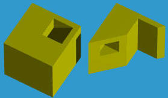
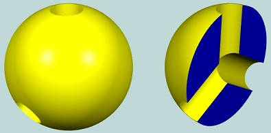
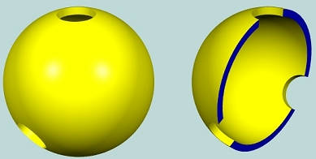
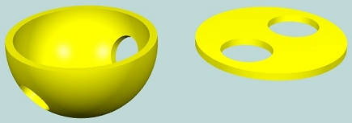

欧拉泊松公式定义：V - E + F - (L - F) - 2(S - G) = 0。其中各个符号含义如下：
V: vertices 的数量E: edges 的数量F: faces 的数量G: 贯穿几何体的洞（hole）的数量，贯穿几何体的 hole 在拓扑结构中被成为 genusS: shells 的数量，shell 是由二维流行（2-manifold）surface 包裹而成，一般你看到的一个几何实体（solid）就是一个 shellL: loops 的数量，face 的外轮廓为 outer loop，face 中可能包含多个 hole（洞），每个 hole 是一个 inner loop（内轮廓）欧拉泊松公式表达了上述几何单元之间的关系。
1、下面是一个 solid，它包含一个没有贯穿 solid 的洞
将其中拓扑单元带入公式：V-E+F-(L-F)-2(S-G) = 16-24+11-(12-11)-2(1-0)=0。
2、下面是一个 solid，有一个 genus（贯穿 solid 的 hole）
将其中拓扑单元带入公式：V-E+F-(L-F)-2(S-G) = 16-24+10-(12-10)-2(1-1)=0。
3、由两个 shell 组成的几何

带入公式：V-E+F-(L-F)-2(S-G) = 24-36+16-(18-16)-2(2-1)=0
有时候你可能没法确定 genus 的数量，例如下面这种，它有 3 个 genus 吗？

我们首先要了解一个概念：拓扑变换（topological transformations）。
应用拓扑变换，即我们可以对模型进行拉伸、挤压、扭曲变形等操作，但是不能裁剪掉某个部分。对一个模型应用拓扑变换后，模型所包含的拓扑单元不会发生变化，该模型仍然满足欧拉泊松公式。
所以我们首先将上述模型进行拓扑变换，即对其进行拉伸、挤压、扭曲等操作。
首先，将其中间“掏空”，使其变薄。

再将顶部的圆洞扩大至下面这种半球形结构，然后再将半球形结构按平整。

此时，经过一系列变换后的模型包含有两个贯穿的洞，所以它有两个 genus。你可以试着将它的拓扑结构带入欧拉泊松公式。
（完）